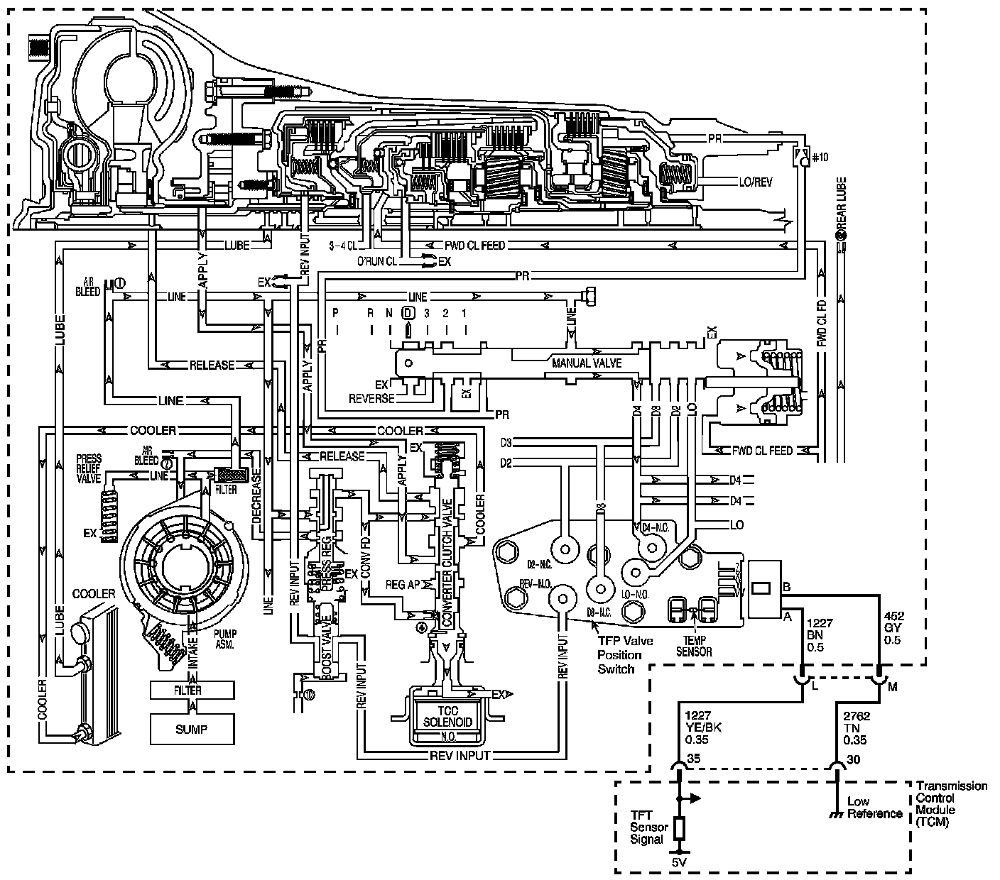

4L60-E / 4L65-E / 4L70-E Automatic Transmission
DTC P0218

Circuit Description
The flow of transmission fluid starts in the bottom pan and is drawn through the filter, control valve body assembly, transmission case and into the oil pump assembly. The oil pump assembly pressurizes the fluid and directs it to the pressure regulator valve where it becomes the main supply of fluid to the various components and hydraulic circuits in the transmission. Hot fluid exiting the torque converter flows through the converter clutch apply valve and into the transmission cooler lines to the oil cooler located in the vehicle radiator, and auxiliary cooler if equipped. From the cooler, fluid returns to cool and lubricate the front of the transmission. In forward drive ranges, D4 fluid from the manual valve is routed through an orificed cup plug in the rear of the transmission case to feed the rear lube fluid circuit.
When the transmission control module (TCM) detects a high transmission fluid temperature (TFT) for a long period of time, then DTC P0218 sets. DTC P0218 is a type C DTC.
DTC Descriptor
This diagnostic procedure supports the following DTC:
DTC P0218 Transmission Condition Overtemperature
Conditions for Running the DTC
^ No TFT sensor DTCs P0711, P0712.
^ The ignition switch is ON for 5 seconds.
Conditions for Setting the DTC
The TFT is greater than 130° C (266° F) for 600 seconds (10 minutes).
Action Taken When the DTC Sets
^ The TCM does not request the ECM to illuminate the malfunction indicator lamp (MIL).
^ HIGH TRANS TEMP message displays on the driver information center (DIC), if equipped.
^ The TCM freezes transmission adapt functions.
^ The TCM records the operating conditions when the Conditions for Setting the DTC are met. The TCM stores this information as Failure Records.
^ The TCM stores DTC P0218 in TCM history.
Conditions for Clearing the DIC/DTC
^ The TCM clears the DIC message when the condition no longer exists.
^ A scan tool can clear the DTC.
^ The TCM clears the DTC from TCM history if the vehicle completes 40 warm-up cycles without a non-emission related diagnostic fault occurring.
^ The TCM cancels the DTC default actions when the fault no longer exists and the DTC passes.
Diagnostic Aids
^ The scan tool Trans. Fluid Temp. should rise steadily to a normal operating temperature, then stabilize.
^ Ask about the customer's driving habits, trailer towing, etc. Trailer towing should occur in D3.
^ Refer to Symptoms - Automatic Transmission. - Symptoms - Automatic Transmission
Test Description
The numbers below refer to the step numbers on the diagnostic table.
3. This step inspects for air flow restrictions or damage which may result in the transmission overheating.